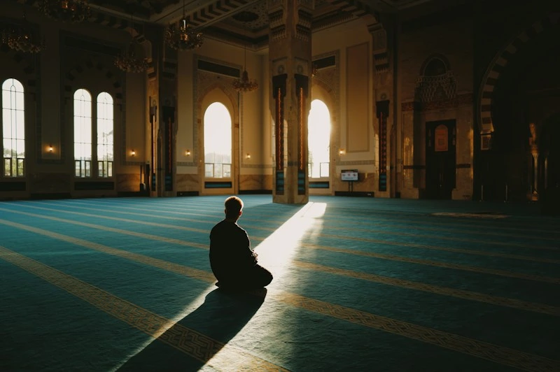
Five daily prayers
The masjid is open for the five daily congregational prayers, with a dedicated women’s section.
Today’s times →بِسْمِ ٱللَّٰهِ ٱلرَّحْمَٰنِ ٱلرَّحِيمِ
Masjid Maryam · Hoppers Crossing
Virgin Mary Mosque has served the Muslims of Wyndham and beyond since 2006 — five daily prayers, three Jumu’ah congregations, Qur’an classes and care for every stage of life.
Worship & community

The masjid is open for the five daily congregational prayers, with a dedicated women’s section.
Today’s times →
Qur’an recitation, Islamic studies and Arabic for children and adults. Contact the office for the current timetable.
About classes →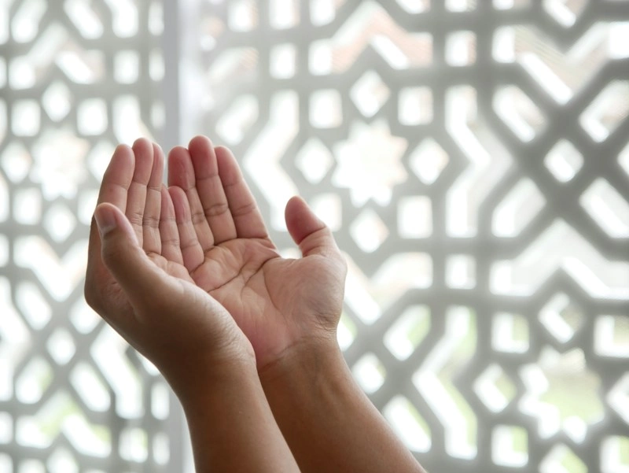
Taking your shahada, or curious about the deen? We will walk beside you — and our partner IntroToIslam offers free structured courses.
Start here →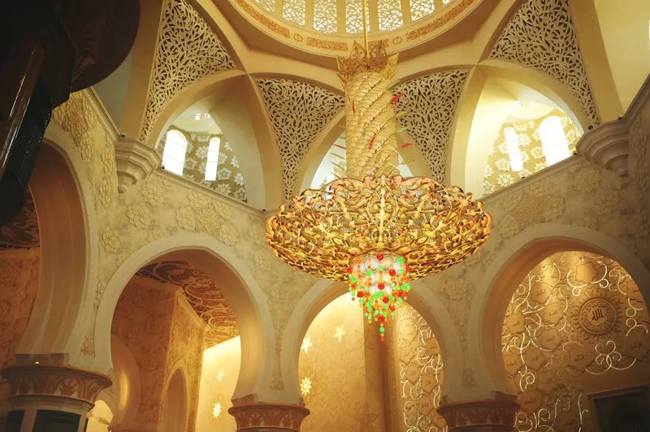
Islamic marriage ceremonies conducted at the masjid. Phone the office to make arrangements.
Nikah →
Ghusl, janazah salah and burial arrangements, handled with dignity and care. Call us and we will guide you through each step.
Janazah →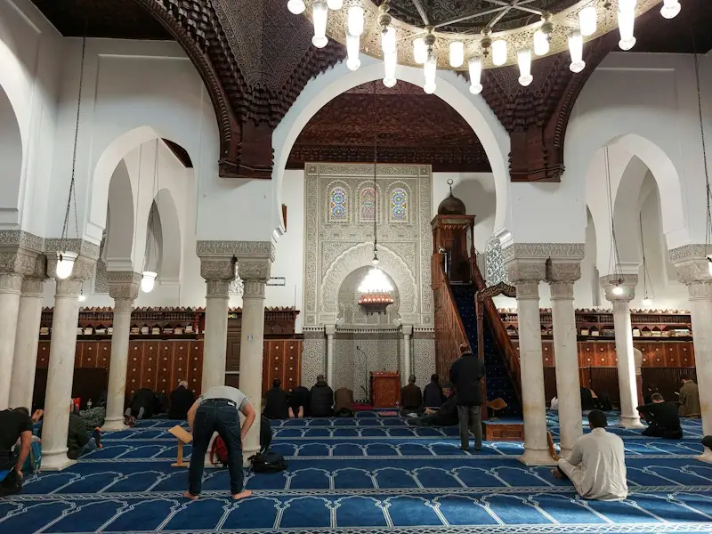
Youth activities, sisters’ programs and community gatherings through the year — announced on our socials.
All programs →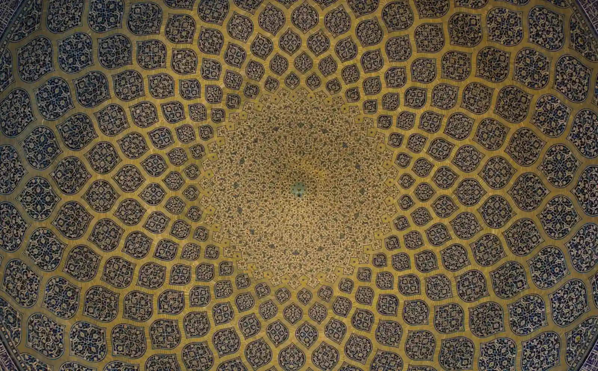
وَأَنَّ الْمَسَاجِدَ لِلَّهِ فَلَا تَدْعُوا مَعَ اللَّهِ أَحَدًا
“And the mosques are for Allah, so do not invoke anyone along with Allah.”
Sheikh Lotfollah Mosque, Isfahan · Photo: Faruk Kaymak
Our name
Allah dedicated an entire surah of the Qur’an — Surah Maryam — to the mother of ‘Isa (peace be upon them both), honouring her among the greatest women of creation. Our masjid carries her name as a reminder of taqwa, trust in Allah, and devotion in worship.

وَٱذْكُرْ فِى ٱلْكِتَـٰبِ مَرْيَمَ “And mention Maryam in the Book…”
One ummah
From Shiraz to Jakarta, every masjid faces the same Qiblah. While we prepare photographs of Masjid Maryam to share, here are some of the world’s most beloved mosques. Open the gallery →
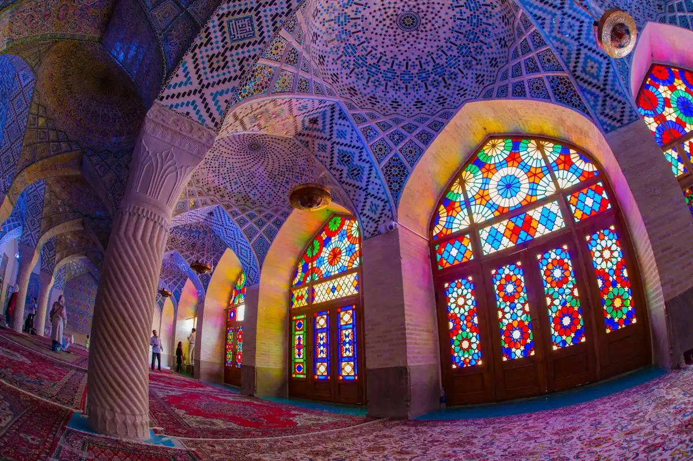
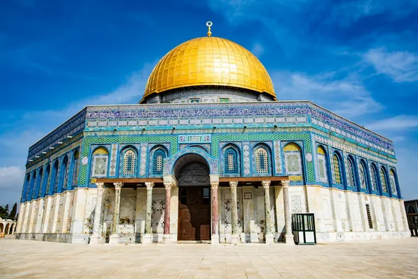
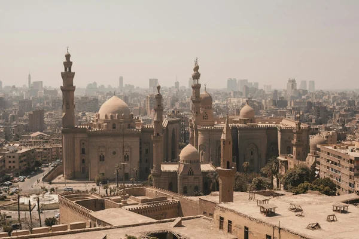
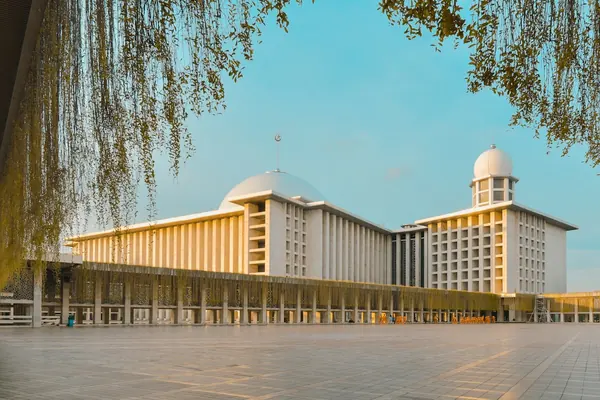
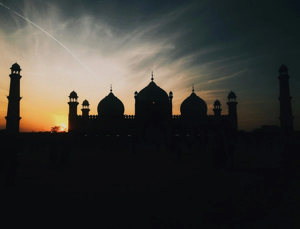
Our da’wah partner
We partner with IntroToIslam, an Australian team offering free, self-paced online courses — from the foundations of faith to the life of the Prophet Muhammad — with weekly classes in person and on Zoom.
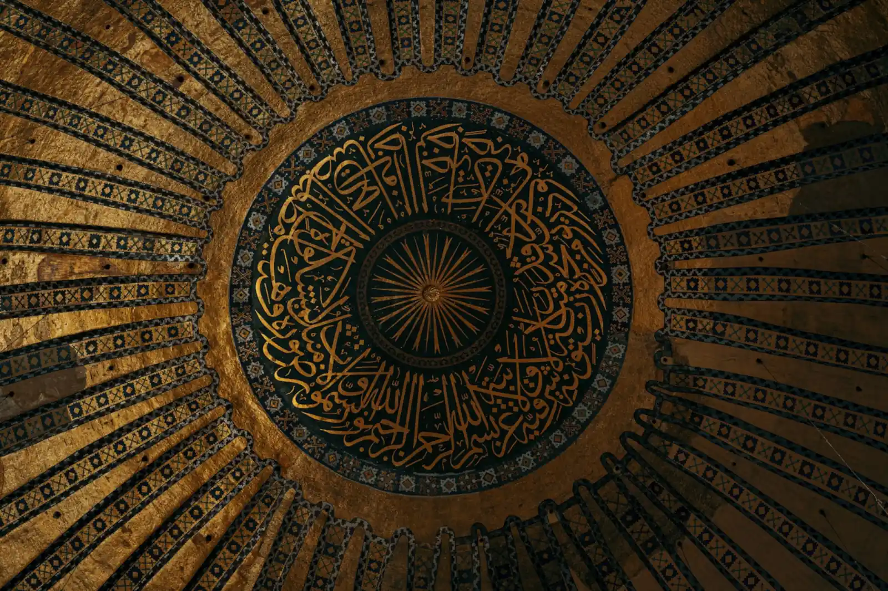
Sadaqah Jariyah
Every prayer, class and janazah this masjid serves is sustained by its community. Give in person at the mosque, or contact the office about bank transfer.
Photo: Husien Bisky / Unsplash